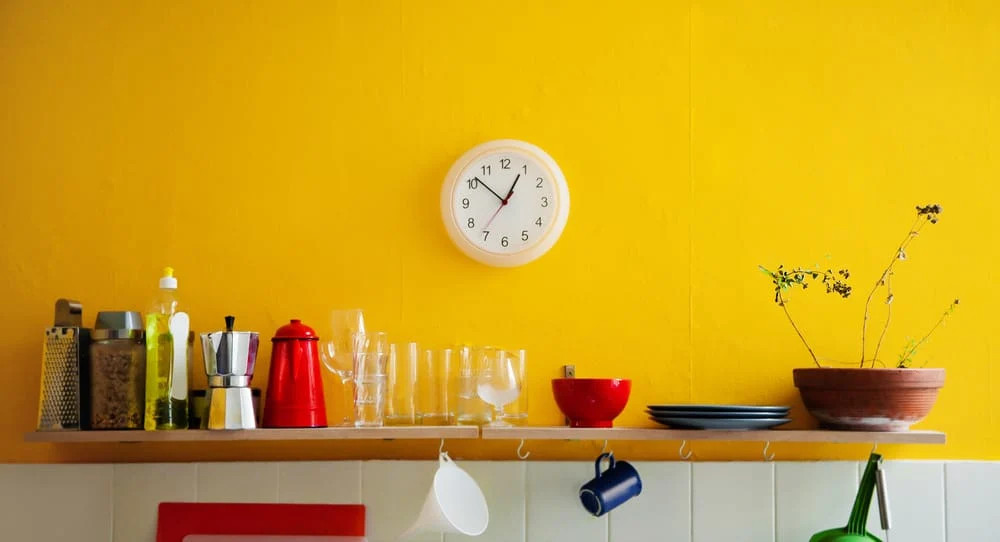
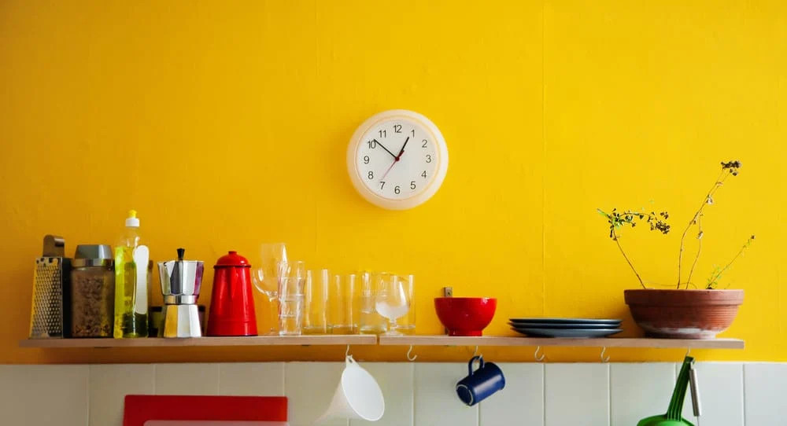

Bryndzove halusky
- 1 cup flour
- 1 egg
- 1 potato
- 1/3 cup water
- 1/2 teaspoon salt
- 5 oz bryndza cheese
- 1/4 cup heavy cream
- 5-7 slices of thick bacon
- salt to taste
Ingredients
 =======

>>>>>>> 529a2d867f8dae903c5c0799d3aafa649a96c73c
=======

>>>>>>> 529a2d867f8dae903c5c0799d3aafa649a96c73c
Finely grate the potato into a bowl, keeping the juice. Add flour,
egg, and salt, and stir with a wooden spoon. Add water and stir
until all the lumps are smoothed out. If the dough is too runny, add
flour; if too thick, add water. In a large pot, bring water to a
boil and add salt.
Transfer the potato dough into the boiling water by using a spaetzle
maker, or push the dough through a large grater or colander. Gently
boil all halušky for 7 or 8 minutes, until they all float to the
top. Meanwhile, fry the bacon until crisp and dice it into cubes.
Strain the halušky and mix with bryndza.
Sprinkle the bacon on top and pour the rendered bacon fat all over.
Salt to taste and serve immediately.